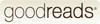

Hi!
I'm Random Dots
I'm an active blogger & wannabe polymath. I write articles on diverse topics and inter-link concepts to come up with new perspectives which usually go un-noticed when working in siloes.
In this blog, I share some of my personal experiences, free-reads, working-articles, for the readers to have a glimpse of my premium content published on
If you wish to become my patron go to 
I also enjoy reading books occasionally, some of my lists can be seen at 